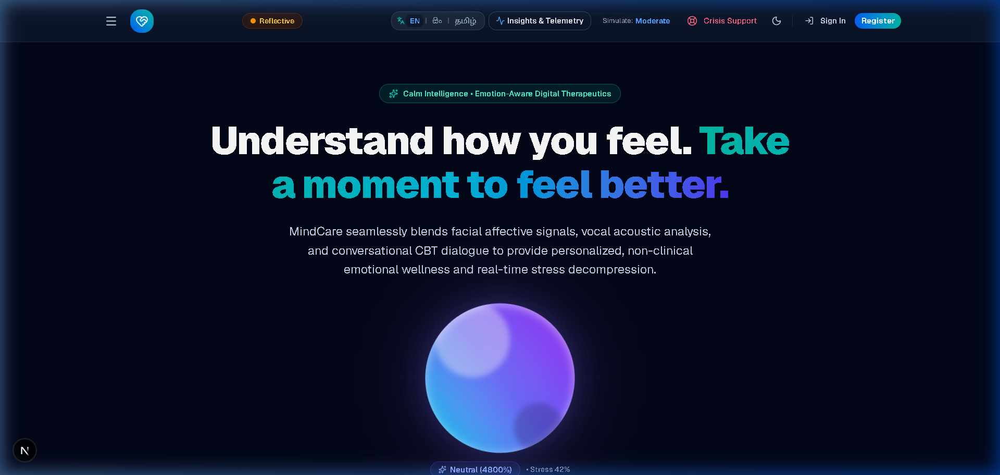

Mental Health Crisis & Clinical Deficit
- 1 in 4 individuals globally affected by mental health disorders (WHO, 2022).
- 76% in LMICs receive zero professional treatment or support.
- Sri Lanka: 14.6 suicides per 100k; only 0.2 psychiatrists per 100k.
- Deep cultural stigma suppresses traditional in-person help-seeking.
Core Technical & Usability Problem
- Existing digital tools are monolingual (English) and text-heavy.
- Typing emotional descriptions imposes cognitive friction during panic.
- Traditional chatbots lack real-time non-verbal affective awareness.
Proposed Solution: A low-barrier, trilingual (EN / SI / TA) wellness companion integrating real-time facial and speech emotion recognition for non-clinical guided support.

Figure 1: MindCare Trilingual Landing Interface (EVID-SS-001)